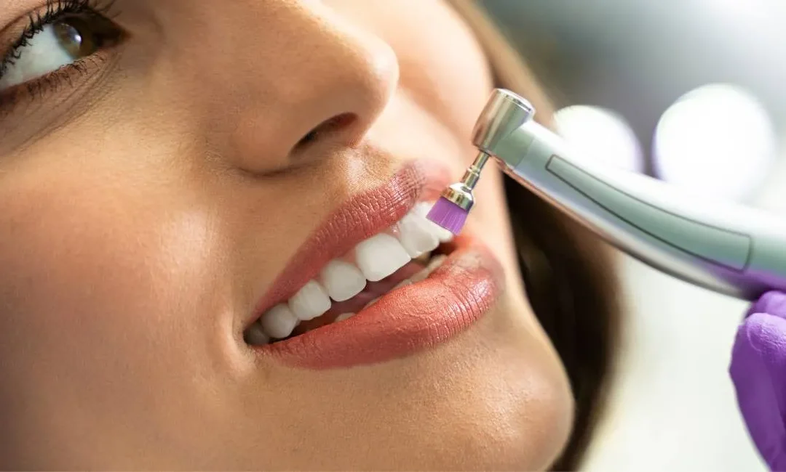

What is the Scaling of Teeth – Benefits & Side Effects

Introduction – Why Dental Scaling Matters for Oral Health
A healthy smile is not only about white teeth. It’s also about clean gums,
fresh breath, and strong
oral hygiene. Many people hear about
scaling of teeth
but feel confused or worried about
whether it is safe or necessary.
Some believe scaling damages teeth, while others think it is only
for severe dental problems.
The truth is different. Dental scaling is a professional cleaning
procedure that removes hardened
plaque and tartar from teeth and gum
lines. It plays a major role in preventing gum disease, bad
breath,
and long-term oral complications.
This guide will explain everything in simple language—what scaling is, how
it works, benefits, side
effects, myths, and when you should visit
the Best dentist in Lahore for scaling
treatment.
You’ll also learn how retainers, braces, and clear
retainers relate to maintaining long-term dental
health after
cleaning.
What is the Scaling of Teeth?
Dental scaling is a deep cleaning procedure performed by a dentist or
dental hygienist. It removes
plaque and hardened deposits called
tartar from tooth surfaces and beneath the gums.
Tartar forms when plaque is not cleaned properly. Regular brushing cannot
remove hardened
tartar, so professional scaling becomes necessary.
Scaling is often part of gum disease treatment and preventive oral care.
According to dental health
sources, scaling is considered a routine
dental treatment and may even be included as basic gum
care when
clinically needed.
In simple terms, scaling is like a professional deep cleaning that
protects your teeth and gums
from infections and damage.
Why Do You Need Dental Scaling?
Many people assume brushing twice a day is enough. While brushing is
essential, it cannot
remove hardened tartar. Over time, plaque buildup
leads to gum inflammation, bleeding, and bad
breath.
Scaling becomes necessary when:
- Gums bleed during brushing
- Persistent bad breath appears
- Yellow or brown deposits form near gums
- Teeth feel rough or coated
- Gum disease symptoms develop
Regular scaling prevents serious issues like periodontitis and tooth loss. Visiting the Best
dentist in
Lahore helps ensure your oral health stays on track.
How Does the Scaling Procedure Work?
The scaling process is simple and usually painless. Dentists use specialized tools or ultrasonic
devices
to
remove plaque and tartar from tooth surfaces and below the gum line.
First, the dentist examines your teeth and gums. Then, scaling instruments gently remove
buildup. In
some
cases,
polishing is done afterward to smooth the teeth and prevent future plaque
accumulation.
If gums are very sensitive, local anesthesia may be used. The procedure usually takes 30 to 60
minutes,
depending
on the amount of buildup.
Is Scaling Good for Teeth?
Yes, dental scaling is beneficial when done by professionals. It improves gum health, prevents
cavities,
and
keeps teeth strong.
Scaling removes bacteria and harmful deposits that cause infections. Without scaling, gum
disease can
progress
and damage tooth-supporting structures.
Some patients experience temporary sensitivity after treatment, but this usually disappears within
a
few
days.
Overall, scaling protects long-term oral health and prevents costly dental treatments.
Is Scaling Good for Teeth?
Yes, dental scaling is beneficial when done by professionals. It improves gum health, prevents
cavities,
and
keeps teeth strong.
Scaling removes bacteria and harmful deposits that cause infections. Without scaling, gum
disease can
progress
and damage tooth-supporting structures.
Some patients experience temporary sensitivity after treatment, but this usually disappears within
a
few
days.
Overall, scaling protects long-term oral health and prevents costly dental treatments.
Scaling of Teeth – Is It Good or Bad?
This is one of the most common questions patients ask. Many myths make people afraid of
scaling.
The Truth
Scaling is good when done properly by trained dentists. It removes harmful bacteria and prevents
gum
disease.
Common Misconceptions
- Scaling weakens teeth – False
- Scaling creates gaps – False (gums shrink after inflammation reduces)
- Scaling damages enamel – False when done professionally
Temporary sensitivity may occur, but it is normal and short-lived. Regular dental checkups ensure
safe
procedures.

Benefits of Dental Scaling
Scaling provides multiple advantages beyond clean teeth.
Improved Gum Health
Removing bacteria reduces inflammation, swelling, and bleeding gums.
Fresh Breath
Bad breath often comes from plaque buildup. Scaling eliminates odor-causing bacteria.
Prevention of Gum Disease
Regular cleaning prevents serious periodontal problems.
Better Appearance
Scaling removes stains and discoloration, improving your smile.
Lower Risk of Tooth Loss
Healthy gums support teeth, reducing the risk of loosening or falling out.
Side Effects of Scaling of Teeth
Dental scaling is safe, but minor side effects may occur temporarily.
- Mild tooth sensitivity
- Slight gum soreness
- Temporary bleeding
- Cold or hot sensitivity
These effects usually disappear within a few days. Dentists may recommend special toothpaste to
reduce
sensitivity.
Scaling vs Regular Teeth Cleaning
Many people confuse scaling with normal cleaning.
Regular cleaning removes soft plaque from visible tooth surfaces. Scaling is deeper and targets
hardened
tartar
and areas below the gum line.
Scaling is recommended for patients with moderate plaque buildup or gum issues, while routine
cleaning is
part of
general dental hygiene.
How Often Should You Get Teeth Scaling?
Most dentists recommend scaling every 6 months. However, people with gum disease or heavy
tartar may
need
more
frequent treatments.
Your dentist will evaluate your oral health and suggest a personalized schedule.
Scaling and Orthodontic Treatment
If you wear braces or retainers, scaling becomes even more important. Orthodontic appliances
trap
food
particles
and increase plaque buildup.
Regular scaling ensures teeth remain clean during orthodontic treatment and after braces
removal.
Teeth Retainer and Retainer After Braces
After braces, retainers help maintain teeth alignment. Clean teeth and healthy gums ensure
retainers
fit
properly and work effectively.
Retainers come in different types, including fixed retainers and removable retainers. Maintaining
oral
hygiene
with scaling supports long-term orthodontic results.
Clear Retainers and Oral Hygiene
Clear retainers are popular because they are comfortable and almost invisible. However, they
require
excellent
oral hygiene to prevent bacteria buildup.
Scaling helps keep teeth clean before wearing clear retainers, ensuring they remain effective and
hygienic.
Choosing the Best Dentist in Lahore for Scaling
Finding a reliable dentist is essential for safe and effective treatment. Look for professionals with
experience
in preventive dentistry and gum care.
The Best dentist in Lahore will provide personalized care, advanced
equipment, and clear
treatment plans. Regular
checkups help detect problems early and maintain a healthy smile.

Tips to Maintain Oral Hygiene After Scaling
After scaling, proper care keeps your teeth clean and healthy.
- Brush twice daily with fluoride toothpaste
- Use dental floss regularly
- Avoid smoking and excessive sugary foods
- Drink plenty of water
- Visit your dentist every 6 months
Good habits prevent plaque buildup and extend the benefits of scaling.
Who Needs Dental Scaling the Most?
Some individuals require scaling more frequently:
- People with gum disease
- Smokers
- Diabetic patients
- Orthodontic patients
- People with heavy tartar buildup
Regular dental visits help determine individual needs.
Cost of Dental Scaling in Pakistan
The cost of scaling varies depending on clinic, dentist experience, and level of cleaning required.
Basic
scaling
is usually affordable, while advanced periodontal scaling may cost more.
Consulting dentalexperts ensures transparent pricing and professional care.
When Should You Avoid Scaling?
Scaling is generally safe, but special precautions may be needed for patients with:
- Severe medical conditions
- Certain heart problems
- Active oral infections
Your dentist will evaluate your health before treatment.
Conclusion – Healthy Teeth Start with Proper Cleaning
Dental scaling is an essential part of oral health care. It prevents
gum
disease, improves
appearance, and
maintains fresh breath. Despite common myths, scaling is safe and beneficial
when performed by
professionals.
Combining regular scaling with good oral hygiene, orthodontic care, and retainers helps maintain
a
beautiful
and
healthy smile for years.
If you are searching for professional dental cleaning, consult dentalexperts to maintain optimal
oral
health
and
achieve long-lasting results.
FAQs
1. What is scaling of teeth?
Scaling is a professional dental cleaning procedure that removes plaque and tartar from teeth
and gum
lines to
maintain oral health.
2. Is scaling good for teeth?
Yes, scaling prevents gum disease, improves hygiene, and protects teeth when performed by a
professional
dentist.
3. Does teeth scaling damage enamel?
No, professional scaling does not harm enamel. It safely removes harmful deposits from teeth.
4. How often should I get scaling done?
Most people need scaling every 6 months, but frequency may vary depending on oral health
conditions.
5. Is scaling painful?
Scaling is usually painless. Some patients may feel mild sensitivity, which disappears within a few
days.